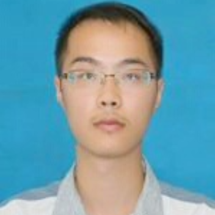

@ 卢云帆
@@ 手机: [+185-0139-6615](tel:+185-0139-6615)
@@ 邮箱: [yunfanlu@foxmail.com](mailto:yunfanlu@foxmail.com)
@@ GitHub: [github.com/yunfanlu](https://github.com/yunfanLu)
@@ 地址: [北京·怀柔·中国科学院大学]()
# 教育经历
## 计算机应用技术 @ 中国科学院大学 {09/2017 - 现在}
研究方向：计算机视觉。17年9月入学，学习了模式识别、机器学习，人工智能、图像处理等课程。入学获得了8000元奖学金。
## 计算机科学 @ 南京理工大学 {09/2013 - 07/2017}
系统的学习了计算机科学的基础课程，并完成了软件工程方向的课程设计、科研训练以及毕业设计。在校期间于ACM集训队，4次代表学校外出参赛。
# 实习、项目及获奖
## 基于合成数据的Logo识别 @ [CCF 大数据竞赛](http://www.datafountain.cn/#/competitions/278/ranking/b/2/2) {10/2017 - 11/2017}
题目要求在提供少量训练数据(1133张)的情况下，完成对5万多张图片中Logo的识别，以准确率排名。
我们的思路是，第一步是合成数据增加训练集，我用了PIL对Logo进行了尺度、旋转、切割、防射等变换并结合背景图片合成了5万张。第二步是选择了Faster-RCNN进行Logo识别，我在新电脑上安装了Ubuntu和一系列依赖，用开源的项目训练了网络。最终获得了第36名的成绩，队名是"ITMO"。
通过比赛运用了Pytorch框架，并阅读了从RCNN、Fast RCNN、Faster RCNN三篇论文，了解了目标检测算法。在合成数据的时候接触了风格迁移的算法。
## 数据分析实习生 @ [上海数旦](http://afa.ai/afa-home.html) {04/2017 - 08/2017}
1，基于selenium Java实现了和讯网上的自动交易股票程序，并实现Python调用的接口。开发花了3天。
2，基于wxpython实现了公司与证劵机构的通讯软件的 GUI。开发花了一周。
3，学习Zipline并翻译其文档，在Leader的带领下参与了量化算法的实现，对一些问题提出了自己的思路，重点在实现算法，并测试、优化之。其中使用过swig C++做python的加速。
4，在公司的服务器上搭建 Spark 、撰写文档，并尝试将一些算法改成分布式的。实习最后两周的工作。
通过4个月的实习，增强了快速学习能力和团队协作能力，能熟练运用python进行数据处理，并学会了selenium和wxpython，初步了解了Saprk系列和并行加速的方法。
## 毕业设计 @ PM2.5 同图像质量关系的研究 {10/2016 - 05/2017}
毕业设计研究了雾霾对图片成像的影响，阅读了一些论文，复现基于暗通道先验的去雾霾算法，并用这个算法的中间变量透射率，在先验透射率和雾霾分布的情况下，估计了其参数。通过毕业设计，阅读了论文，学习了常用的回归算法和图像处理以及视觉的知识。
## ACM/ICPC Regional 北京银奖 - 队伍：[downtown tourist](http://acm.pku.edu.cn/icpc_pku2017/2017hihoCoder.html) {19/11/2017}
## CCPC 秦皇岛 铜奖 - 队伍：赴京赶考 {28/10/2017}
## 蓝桥杯全国决赛 三等奖 {05/2016}
# 个人陈述
目前在人工智能学院读计算机视觉方向的学术研究生，编程基础较好，计算机基础相对知识扎实，学知识快，希望能在模式识别、算法方向做工作，为读博或者工作打下基础。
实习时间是2018年3月初到2018年8月底。
==== 更多：[排名链接](http://www.datafountain.cn/#/competitions/278/ranking/b/2/2)
==== A line starting with four equal signs will generate a page break for printing.
